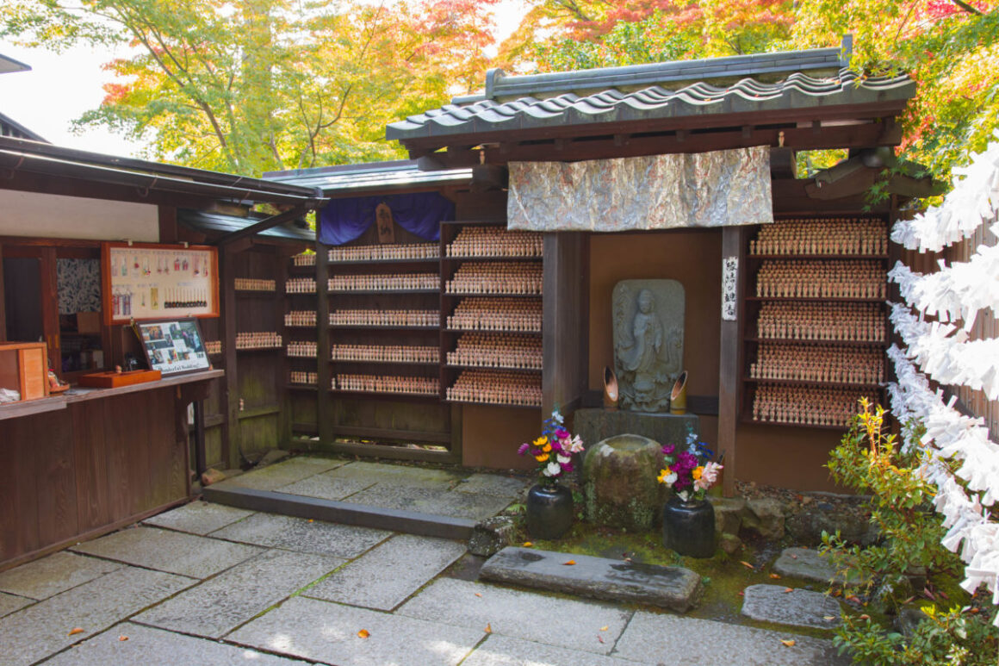
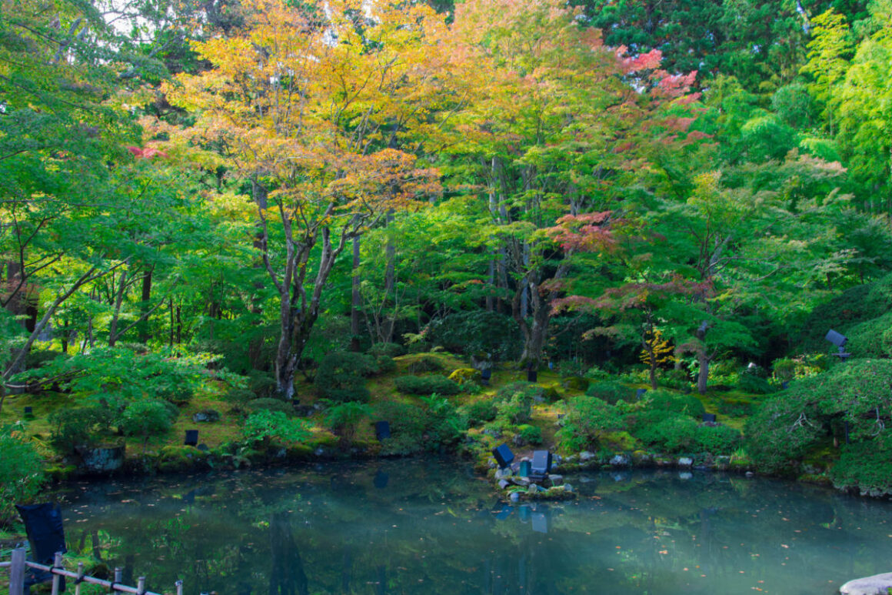
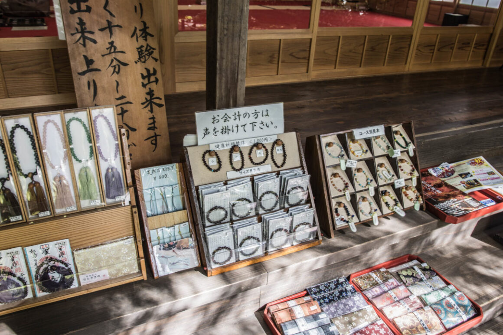
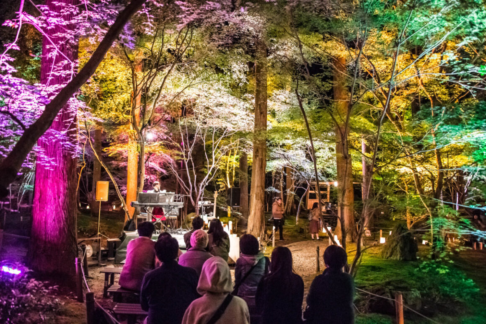

Entsuin Temple

วัดเอ็นสึอิน (Entsuin Temple) เป็นวัดที่สร้างขึ้นข้างๆกันกับวัดซุยกันจิในปี 1647 โดยมีจุดประสงค์เพื่อให้เป็นสุสานของ ดาเตะ
มิทสึมุเนะ หลานของไดเมียวดาเตะ มาซามุเนะที่เสียชีวิตตั้งแต่อายุยังน้อย คือ 19 ปีเท่านั้น
และเนื่องจากเป็นวัดที่สร้างขึ้นเพื่อเป็นสุสานของผู้ที่เสียชีวิตตั้งแต่อายุยังน้อย
วัดเอ็นสึอินจึงเป็นที่ประดิษฐานของพระโพธิสัตว์เจ้าแม่กวนอิม ผู้เป็นสัญลักษณ์แห่งเมตตา เพื่อให้วิญญาณของผู้วายชนม์ได้รับความเมตตาในโลกหน้า

จุดเด่นของวัดแห่งนี้คือสวนหิน เนื่องด้วยการจัดหินและมอสภายในสวนแห่งนี้มีเอกลักษณ์อยู่ที่การใช้อ่าวมัตสึชิมะเป็นต้นแบบ

นอกจากที่นี่จะวิวสวยแล้ว สำหรับสายมูที่ชอบกำไลข้อมือ นอกจากจะมีกำไลขายตามที่เห็นในภาพแล้ว
ที่นี่ก็ยังสอนร้อยกำไลให้กับผู้ที่สนใจอีกด้วย โดยจะมีการอธิบายตั้งแต่วิธีร้อยหินและประเภทของหิน เช่น หินแต่ละแบบมีพลังอะไรบ้าง เป็นต้น

ในฤดูใบไม้ผลิ วัดเอ็นทสึอินจะมีการประดับไฟไลท์อัพในเวลากลางคืน ความงามของใบไม้เปลี่ยนสีเล่นแสงไฟยามค่ำคืนนั้นเกินจะบรรยาย
อีกทั้งยังมีมุมให้ได้ลองประดิษฐ์ลูกประคำอีกด้วย (มีค่าใช้จ่ายเพิ่มเติม)